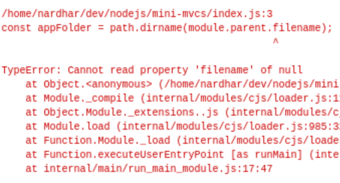
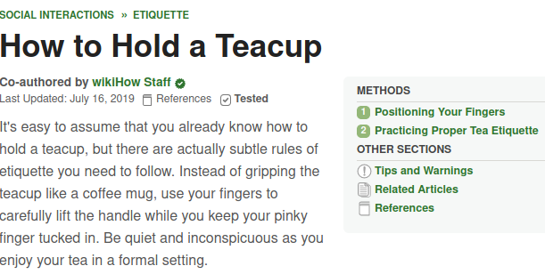
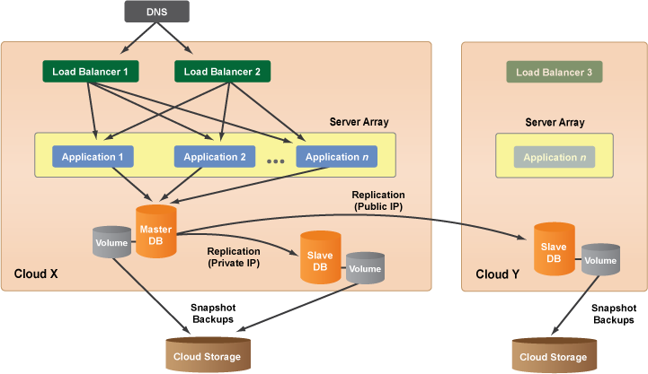
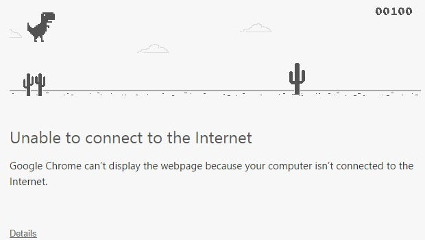

Manejando y Transformando errores con NodeJS
Felix Carreño
Erase una vez...

Pero...

También...

Y en otros casos...


Usando try/catch
try {
console.log(item.length);
} catch(e) {
console.log("ERROR: " + e.message);
}
// imprime: ERROR: item is not defined
function f(item) {
try {
var len = item.length;
try {
return item.split(' ');
} catch(e) {
console.log("ERROR: item no es un array");
}
} catch(e) {
console.log("ERROR: " + e.message);
}
}
f(2);
// ERROR: item no es un array
Funciones como "First class citizens" 1/3
function esNumeroPar(num) {
return num % 2 === 0;
}
var listado = [1,4,8,51,90,101];
console.log(listado.filter(esNumeroPar));
// filter es una función de orden superior (high order function)
// imprime: [4, 8, 90]
Funciones como "First class citizens" 2/3
function esNumeroPar(num) {
return num % 2 === 0;
}
function esMultiplo3(num) {
return num % 3 === 0;
}
function esMultiplo4(num) {
return num % 4 === 0;
}
...
Funciones como "First class citizens" 3/3
function esMultiploDe(divisor) {
return function multiplo(num) {
return num % divisor === 0;
};
}
var listado = [1,4,8,51,90,101];
console.log(listado.filter(esMultiploDe(2))); // [4, 8, 90]
console.log(listado.filter(esMultiploDe(3))); // [51, 90]
console.log(listado.filter(esMultiploDe(4))); // [4, 8]
La clase Error de NodeJS
Todos los errores en NodeJS extienden de la clase Error
- - TypeError
- - ReferenceError
- - SyntaxError
- - ...
class ApiError extends Error {
constructor(message, status) {
super(message);
this.status = status;
}
}
class ValidationError extends ApiError {
constructor(message, fieldErrors) {
super(message, 412);
this.fieldErrors = fieldErrors;
}
}
Ventaja de Extender clases
function validarUsuario(datosUsuario) {
// ...
throw new ValidationError("Error al validar el usuario", []);
}
try {
validarUsuario({ nombre: 'Felix' });
} catch(e) {
console.log(e instanceof ValidationError); // true
console.log(e instanceof ApiError); // true
}
¡Gracias!
https://github.com/nardhar/presentation-error-handling-nodejs
Github @nardhar
Twitter @nardharmure